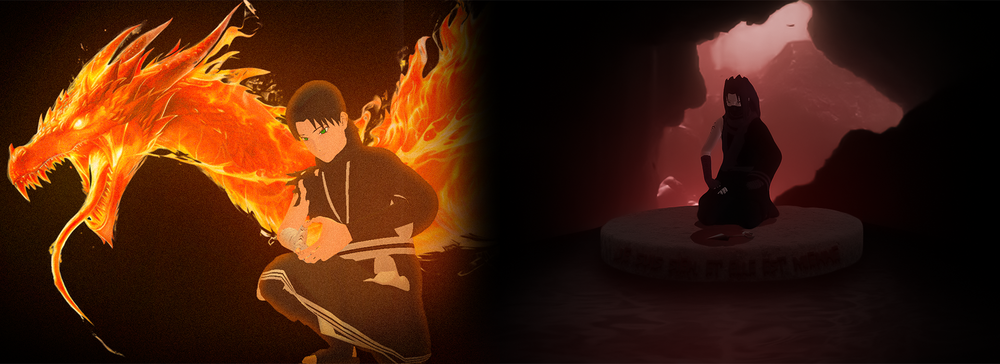

HRP
@aalexgc, 18 ans, j'ai 1300 heures de jeu uniquement sur la FSC, et comme on dit, je vise le sommet. Par ailleurs, jamais aucune sanction ni même convoqué en attente staff pour erreurs in game. J'ai commencé à jouer sur le serveur vers avril 2024. J'ai apprécié tout type de RP que j'ai fait, et je pense mériter ma place en Chinoike, afin de continuer à proposer du jeu et me permettre de découvrir de nouvelles choses mais aussi de nouvelles personnes.
J'ai commencé par jouer Musai Mazo sur la V1, je n'avais pas de KG et je savais pas me battre donc j'ai fait un philisophe à Ame, essayant de réconforter certains après les défaites quotidiennes. Ca a été notamment ma découverte du RP plus généralement, j'ai beaucoup apprécié cette expérience. ( Tokubetsu-Jonin ; Section Psychologique et bureau des missions )
Au début de la V2, j'ai voulu tenté le loose RP constant, j'ai joué Yuri Zinko, Taijutsu-Man de Kiri. J'ai fait partie de la génération du première examen chunin inter-village. Je suis monté Kakunin et ait été récolteur de taxes et de ressources. Gagnant du tournoi de Soccer avec Tokichi, organisé par Ren Jiro. ( Kakunin ; Premier Taijutsu-Man de l'histoire de Kirigakure )
J'ai ensuite eu la chance de faire mon premier RP clan, en tant que Shanzô Fûma. J'ai pu arriver à la gérance de la section PL et suis devenu maitre en Bukijutsu ainsi qu'expert en Juinjutsu. J'ai globalement apprécié ce RP, j'ai fait une trame "culte de Yuna" sous RPK ON. Dans cette trame j'ai pu transmettre le parchemin des outils maudits à celui qui avait réussit à faire toutes les épreuves. Malheuresement, j'ai eu quelques problèmes dans ma vie familiale m'obligeant à souvent voyager dans d'autres pays, je pense que mon personnage aurait pu prendre beaucoup plus d'ampleur !
Enfin, je joue actuellement Zayne Kagure, membre du clan mineur Kagure. Zayne est un scientifique, diplomate et forgeron, mais aussi Maitre Katon maitrisant le Dragon de feu. J'ai essayé de proposer le plus de RP autour du Katon, créant 'les adpetes du Katon'. ( Tokubetsu-Jonin ; Maitre Katon ; personnage datant du 18/04/25 )
J'aimerais tout simplement saisir l'opportunité de découvrir le RP Nukenin ! Je pense avoir l'expérience RP pour. (Dispo 18:00 - 03:00 tout les jours sauf imprévus)